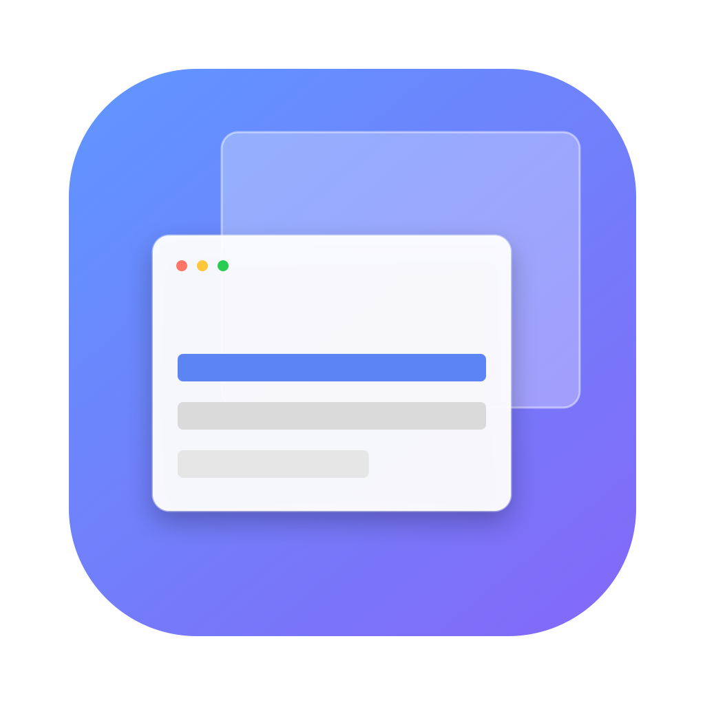
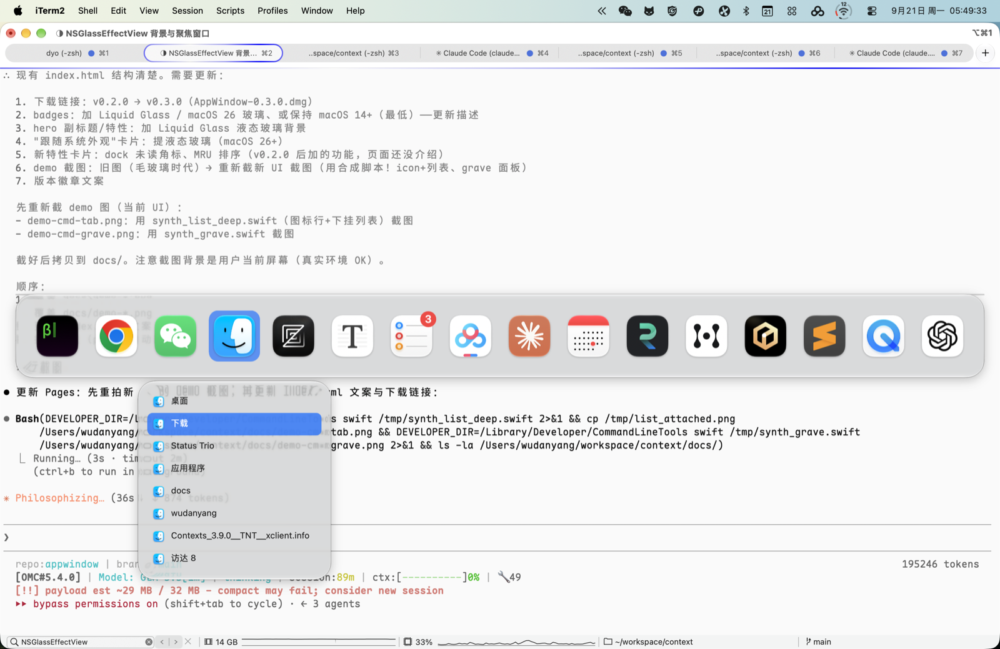
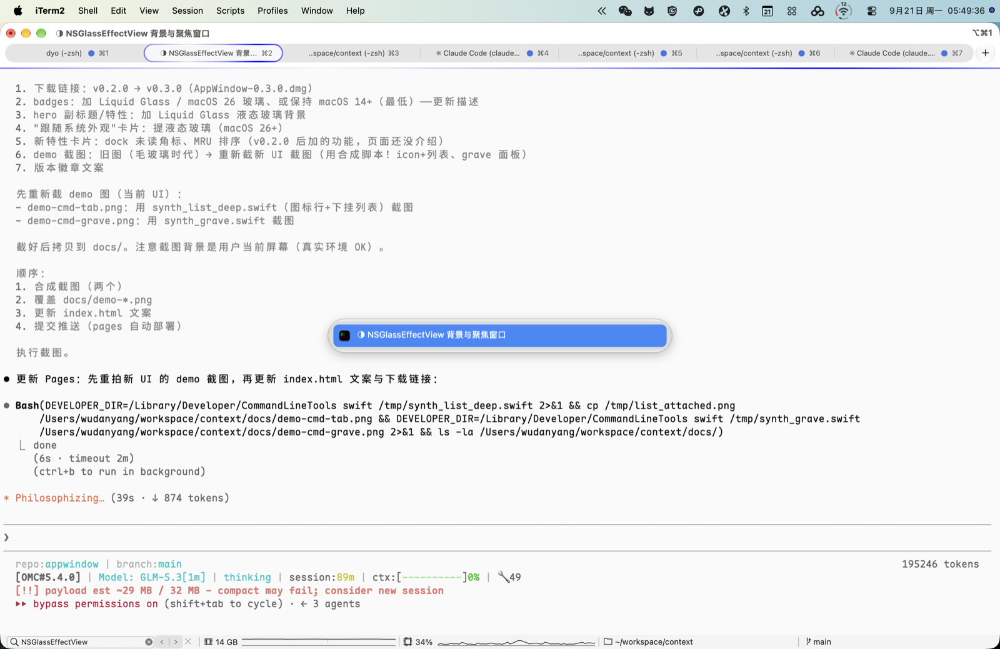

把 macOS 的 Cmd+Tab 与 Cmd+` 变成可见、可预览、可鼠标参与的液态玻璃选择面板


横向图标面板（尺寸贴近原生），高亮应用下方直接展开其窗口列表——选好应用的同时选好窗口，松开 Cmd 直达。
| 按键 | 作用 |
|---|---|
| Tab / → | 下一个应用 |
| Shift+Tab / ← / ` | 上一个应用 |
| ↑ / ↓ | 选当前应用的窗口 |
当前应用的全部窗口列表（高度约为屏幕 70%），默认高亮下一个窗口，与系统习惯一致。
| 按键 | 作用 |
|---|---|
| ` | 向下循环选择 |
| ↑ / ↓ | 上下移动 |
| 松开 Cmd | 切换到高亮窗口 |
macOS 26+ 采用 NSGlassEffectView 液态玻璃 + 毛玻璃模糊分层；图标行与窗口列表合并在同一窗口，共享聚焦玻璃样式。macOS 14/15 自动回退毛玻璃。
悬停即高亮、点击即切换；图标区滚轮切换应用，窗口列表滚轮连续滚动浏览。
每个屏幕同时显示一份面板，高亮与滚动状态跨屏实时同步，视线不用跨屏移动。
应用图标右上角显示未读数胶囊（与 Dock 一致），切应用前即可看到消息提醒。
应用按最近使用顺序排列，按激活时间而非窗口层级，切换习惯与系统一致。
面板为非激活窗口，全程不抢占键盘焦点；按 Esc 或点击面板外任意位置即可取消。